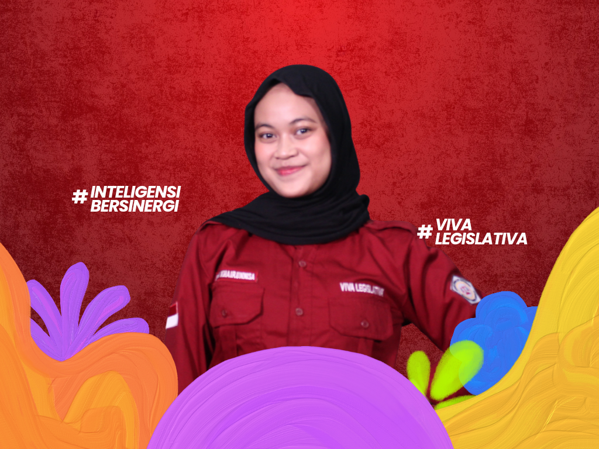

Komisi II Advokasi Kebijakan
Halo Mahasiswa Poltekkes Kemenkes Jakarta III!
Perkenalkan kami dari Komisi II Dewan Legislatif Mahasiswa Poltekkes Kemenkes Jakarta III Periode 2026. Yuk kenal kami lebih lanjut!

Farhani Afifah
Koordinator Komisi II

Luthfi Tania
Anggota Komisi II

Mutiara Haura
Anggota Komisi II

Dhina Ramadhani
Anggota Komisi II

Nuri Kartika
Anggota Komisi II

Richa Khairunnisa
Anggota Komisi II
Tugas Pokok Komisi II
-
Mesosialisasikan dan mempublikasikan kegiatan DLM Poltekkes Kemenkes Jakarta III kepada mahasiswa dan masyarakat luas melalui media sosial (Instagram, X, dan YouTube).
-
Menerima hasil evaluasi dari BEM terhadap aspirasi mahasiswa terkait sarana dan prasarana yang berlaku di lingkungan Poltekkes Kemenkes Jakarta III.
-
Menampung, memperjuangkan, dan memastikan keluhan dan aspirasi mahasiswa setelah kegiatan BEM Poltekkes Kemenkes Jakarta III yang bertujuan untuk memperbaiki kinerja BEM kedepannya.
Program Kerja Komisi II
-
Rapat Kerja (RAKER)
Menyusun program kerja yang akan berjalan selama satu periode kepengurusan organisasi tersebut dapat terbentuk dan terencana dengan baik karena memiliki tolak ukur tertentu dalam setiap prosesnya.

-
Timeline
Membuat kalender timeline setiap program kerja LKM Poltekkes Kemenkes Jakarta III agar tidak terjadi benturan program kerja di hari yang sama.

-
Sosial Media DLM
Menyebarkan informasi yang berkaitan dengan hari-hari besar nasional/internasional, publikasi IG TV DLM, dan dokumentasi kegiatan DLM.

-
Website
Menyebarkan informasi yang berkaitan dengan visi misi DLM, tugas pokok dari setiap komisi, produk hukum, dan berita acara DLM.

-
Kertas Kritik Saran
Melakukan pengumpulan kritik saran mahasiswa Poltekkes Kemenkes Jakarta III terhadap BEM dalam bentuk Google Form.
-
Pamflet Kertas Kritik Saran
Pembuatan pamflet yang merupakan jawaban BEM atas krtik saran yang disampaikan mahasiswa melalui Kertas Kritik Saran.

-
TALKTIVE
Mengadakan acara semiar talkshow legislatif yang bertemakan "Health Law Education: a Pillar of Healthcare Professional Protection in The Era of Health Transformation".